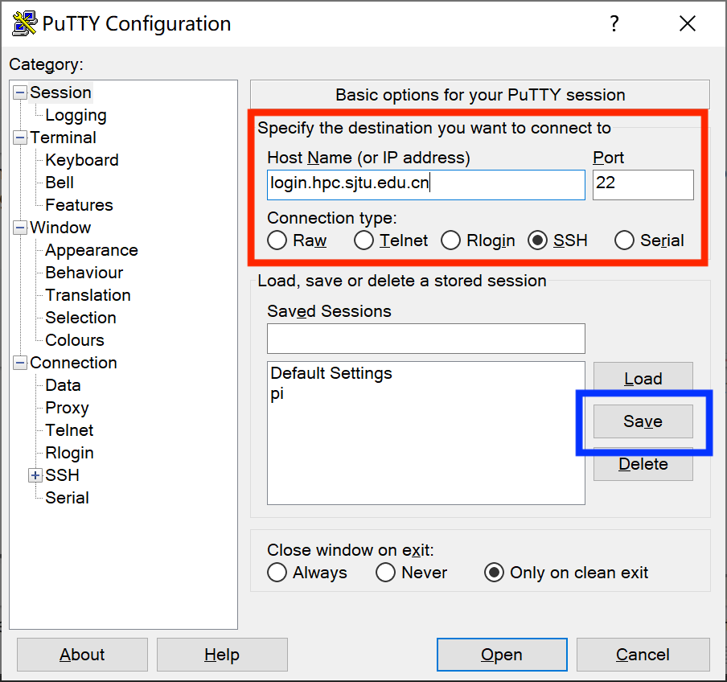
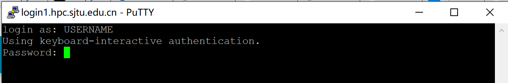
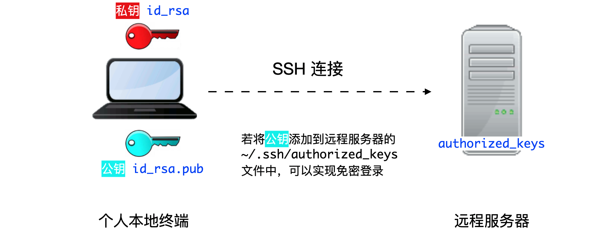
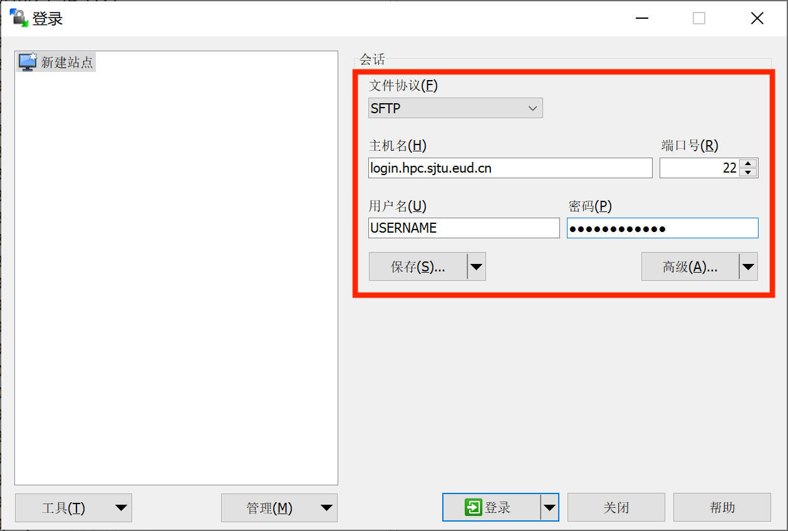
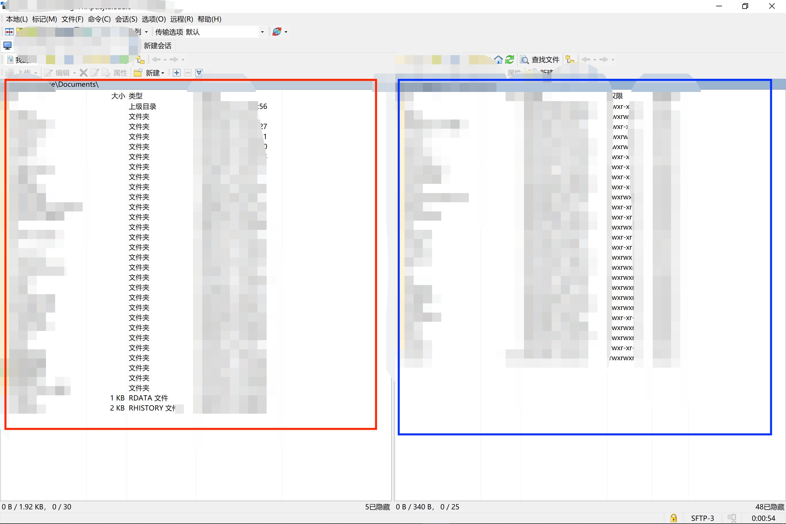
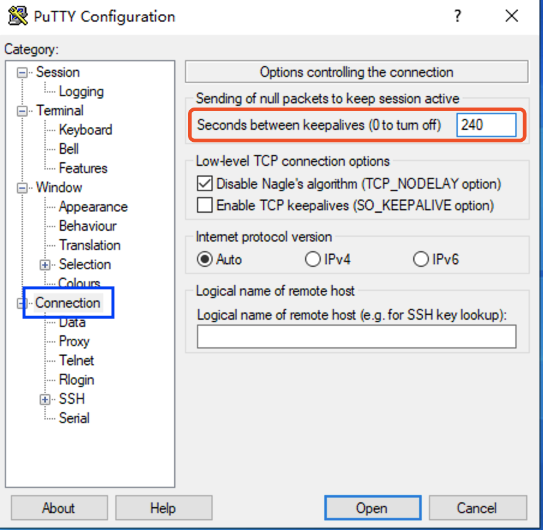
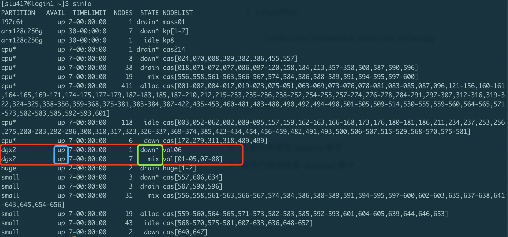

SJTU PI2.0-超算简明教程#
参考资料: PI2.0官方文档
Author: Kai Chen
登陆超算节点#
登陆地址#
思源一号:
sylogin.hpc.sjtu.edu.cn\(\pi 2.0\)和AI平台:
pilogin.hpc.sjtu.edu.cnARM平台(限校内IP):
armlogin.hpc.sjtu.edu.cn
登陆方法#
使用内置ssh程序，通过命令行登陆hpc服务器。以下代码示例，以用户stu438给出
ssh stu438@pilogin.hpc.sjtu.edu.cn
根据命令行提示符Password输入密码（注意，密码输入过程中，终端信息不回更新），输入完成后Enter确认登陆。
使用PuTTY进行登陆

运行PuTTY，在图中红框处输入服务器信息，单击蓝框处保存（以免下次使用重复输入）

根据弹出终端窗口显示指令，输入账号密码（注意，密码输入过程中，终端信息不回更新），Enter登录。
无密码登陆#
提示: “无密码登录”仅适用于使用 SSH 命令行工具的 Linux/ UNIX / Mac 用户，Windows
“无密码登录”使您无需输入用户名和密码即可登录，它还可以作为服务器的别名来简化使用。无密码登录需要建立从远程主机（集群的登录节点）到本地主机（您自己的计算机）的SSH信任关系。建立信任关系后，双方将通过 SSH 密钥对进行身份验证。
首先，您需要在本地主机上生成的 SSH 密钥对。
ssh-keygen -t rsa
接下来屏幕会显示：
Generating public/private rsa key pair.
Enter file in which to save the key (/XXX/XXX/.ssh/id_rsa): # 存储地址，默认回车即可
Enter passphrase (empty for no passphrase): # 默认回车即可 (无密码短语模式，请注意保存您的私钥)
Enter same passphrase again: # 默认回车即可 (无密码短语模式，请注意保存您的私钥)
在无密码短语的情况下，您的私钥未经加密就存储在您的硬盘上，任何人拿到您的私钥都可以随意的访问对应的SSH服务器。
ssh-keygen将在~/.ssh中生成一个密钥对，包含两个文件:id_rsa(需保留的私钥)，和id_rsa.pub(可作为您的身份发送的公钥)。使用
ssh-copy-id将本地主机的公钥id_rsa.pub添加到远程主机的信任列表中。(on your PC) $ ssh-copy-id YOUR_USERNAME@TARGET_IP
若手动自行在服务器上添加
authorized_keys文件， 将本地主机~/.ssh/id_rsa.pub的内容添加到远程主机的文件~/.ssh/authorized_keys中，# copy the content in ~/.ssh/id_rsa.pub in your local to ~/.ssh/authorized_keys in your remote server mkdir -p ~/.ssh echo "[content from ~/.ssh/id_rsa.pub]" >> ~/.ssh/authorized_keys
并需确保
authorized_keys文件的权限为600：(on HPC) $ chmod 700 ~/.ssh (on HPC) $ chmod 600 ~/.ssh/authorized_keys

我们还可以将连接参数写入 ~/.ssh/config 中，以使其简洁明了。 新建或编辑文件 ~/.ssh/config：
$ EDIT ~/.ssh/config
还需分配以下内容: 主机分配远程主机的别名，主机名是远程主机的真实域名或IP地址，端口分配 SSH 端口，用户分配 SSH 用户名。
Host hpc
HostName TARGET_IP
Port TARGET_PORT
User YOUR_USERNAME
您需要确保此文件的权限正确：
(on your PC) $ chmod 600 ~/.ssh/config
然后，您只需输入以下内容即可登录集群：
$ ssh hpc
当 SSH 密钥对发生泄漏，请立即清理本地电脑 .ssh 文件夹里的密钥对，并重新在本地生成密钥对(生成时请设置密码短语)。另外请删除集群上的 ~/.ssh/authorized_keys 文件。
如何重新生成密钥对
(on HPC) $ rm -f ~/.ssh/authorized_keys # 清除服务器上原有的 authorized_keys
(on your PC) $ rm ~/.ssh/id* # 清除本地 .ssh 文件夹中的密钥对
(on your PC) $ ssh-keygen -t rsa # 在本地重新生成密钥对
(on your PC) $ ssh-keygen -R login.hpc.sjtu.edu.cn # 清理本地 known_hosts 里关于集群的条目
(on your PC) $ ssh-copy-id YOUR_USERNAME@TARGET_IP # 将本地新的公钥发给服务器，存在服务器的 authorized_keys 文件里
文件传输#
对于大量数据传输，集群提供如下解决方案：
少量数据传输，集群提供了专门用于数据传输的节点 (
data.hpc.sjtu.edu.cn,sydata.hpc.sjtu.edu.cn)，可以直接使用putty,filezilla等客户端，或在本地使用scp,rsync命令向该节点发起传输请求（因安全策略升级，在集群的终端上不支持scp/rsync的远程传输功能，所以需要从用户本地终端使用scp/rsync命令）。1TB-1PB数据传输，强烈建议您联系我们，将硬盘等存储设备送至网络信息中心进行传输。
超过1PB的数据，请您与我们联系，由计算专员根据具体情况为您解决数据传输问题。
使用内置scp或sftp程序上传或下载文件。下面演示使用scp进行文件传输：
# Upload local folder data to the remote folder ~/tmp/ on server
scp -r data/ stu438@pilogin.hpc.sjtu.edu.cn:~/tmp/
# Download ~/data.out to current local path from remote server
scp stu438@pilogin.hpc.sjtu.edu.cn:~/data.out ./
scp的使用方法与cp命令类似，其他参数设定可以参考cp命令。
使用WinSCP进行文件传输。

按照上图红框内所示，输入设置，其中用户名与密码为hpc服务器登陆的账号密码，随后单击保存，单击登陆与服务器建立连接。

左侧红框内为本地文件列表，右侧蓝框内为远程服务器文件列表，可以通过鼠标拖拽的方式进行文件上传、下载。
Quick Start#
在HPC服务器上通过SLURM提交Python代码，进行Tensorflow相关运算。
登陆服务器
通过
scp或WinSCP上传测试代码(例：tf_test.py)首次登陆环境搭建
# check availble modules module avail # Load module of anaconda module load miniconda3 # check whether module loading is successful module list # setup auto-module-load in .bashrc echo "module load miniconda3" >> .bashrc # conda initilization conda init # create a new conda env, named myenv, with python version 3.9, # and install packages for sci-computing conda create --name myenv python=3.9 numpy pandas scipy matplotlib jupyter ipykernel -y # activate new env conda activate myenv # add auto activation to .bashrc echo "conda activate myenv" >> .bashrc # install pytorch conda install pytorch torchvision torchaudio pytorch-cuda=11.7 -c pytorch -c nvidia -y # install jupyter kernel (optional) python -m ipykernel install --user --name myenv --display-name "Python (myenv)" # install sklearn (optional) conda install -c conda-forge scikit-learn -y # install tensorflow-gpu 2 (Default) pip install -y tensorflow-gpu # 若想安装tensorflow-gpu 1.15，请勿同时安装两个版本，容易出错。 pip install -y tensorflow-gpu==1.15
创建SLURM脚本
方法一：在远程服务器通过
vi/vim直接编辑创建。方法二：在本地创建纯文本文件，保存并上传。
脚本范例
slurm_test.sh#!/bin/bash #SBATCH -J xzq_test #SBATCH -p dgx2 #SBATCH -N 1 #SBATCH -n 1 #SBATCH --ntasks-per-node=1 #SBATCH --gres=gpu:1 #SBATCH --output=%j.out #SBATCH --error=%j.err #SBATCH --time=00:30:00 #SBATCH --mail-type=end #SBATCH --mail-user=your_email@sjtu.edu.cn # if you want to switch working directory # cd working_dir/ python -c "import tensorflow as tf; \ print('Num GPUs Available: ', len(tf.config.experimental.list_physical_devices('GPU')));” # run python script # python test_scipt.py
使用
sbatch命令递交脚本sbatch slurm_test.sh终端将返回如下结果：
Submitted batch job 961975
表明slurm脚本成功递交，任务id为961975。该任务号将成为查看该任务状态，并对其进行其他操作的手段。
查看脚本运行状态
sacct命令返回如下结果，通过任务id找到对应任务的状态。
JobID JobName Partition Account AllocCPUS State ExitCode ------------ ---------- ---------- ---------- ---------- ---------- -------- 960304 test dgx2 acct-cfte+ 1 FAILED 1:0 960304.batch batch acct-cfte+ 1 FAILED 1:0 960304.exte+ extern acct-cfte+ 1 COMPLETED 0:0 960467 test dgx2 acct-cfte+ 1 COMPLETED 0:0 960467.batch batch acct-cfte+ 1 COMPLETED 0:0 960467.exte+ extern acct-cfte+ 1 COMPLETED 0:0 961975 test dgx2 acct-cfte+ 1 RUNNING 0:0 961975.exte+ extern acct-cfte+ 1 RUNNING 0:0
查看运行结果
sacct返回个任务状态中，State列可以能出现如下状态：RUNNING: 任务仍在运行；
FAILED: 任务报错，前往961975.err文件，查看错误日志
cat 961975.err
COMPLETED：任务运行结束，前往961975.out文件，查看输出结果
cat 961975.out
SLURM远程登录Jupyter Notebook#
参考资料: Slurm远程登录Jupyter Notebook, 分享脚本远程登陆 Jupyter Notebook
使用已部署SLURM的服务器或高性能计算资源（GPU和CPU）运行jupyter notebook时，通常会遇到以下问题。
通过
ssh只能登录到slurm的登录管理节点，再通过登录节点使用slurm作业调度系统，提交slurm脚本运行作业。无法再登录节点直接运行
jupyter并通过ssh转发端口。
解决方案：
通过
srun命令申请交互bash，在其中运行jupyter notebook， 并通过ssh转发端口至本地。通过编辑slurm脚本，通过
sbatch发送并启动jupyter，同时转发至本地端口。
交互bash启动jupyter#
在计算节点启动
jupyter# srun申请队列gpu-tesla，申请资源内存10G，1块gpu，申请打开交互bash。 srun --partition=gpu-tesla --mem=10G --gres=gpu:1 --pty bash # module加载anaconda及所需gpu驱动等 module load anaconda3 # 激活python环境 your_env conda activate your_env # 启动jupyter，指定port（可指定其他未被占用的端口），指定ip（此处以node9为例，若登录其他节点，请使用prompt中显示的节点名称） jupyter notebook --no-browser --port=8879 --ip=node9
在本地连接
jupyter# 8880为本地端口，node9:8879为服务器jupyter指定ip和指定端口，your_name为用户名，cluster_url为服务器ip ssh -N -L 8880:node9:8879 your_name@cluster_url
打开浏览器，通过
localhost:8880访问# 对于浏览器要求的token，复制启动jupyter后返回的信息中的token即可 "http://127.0.0.1:8880/?token=260544***********************************dde4656"
Slurm脚本启动jupiter#
通过
sbatch提交任务：sbatch jupyter_notebook.sh本地连接
jupyter，并通过浏览器打开。（同交互bash启动jupyter中2-3步操作)查看当前目录下log文件，找到相应服务器端口，以及
jupyter notebook的token。查看
ssh隧穿命令:cat jupyter_notebook_[your slurm job-id].log|grep ssh
查看
jupyter notebookURL:cat jupyter_notebook_[your slurm job-id].log|grep 127.0.0.1
服务器端开启 Jupyter Notebook 服务的脚本如下：
#!/bin/bash
#SBATCH --partition you_partation
#SBATCH --nodes 1
#SBATCH --ntasks 1
#SBATCH --cpus-per-task 5
#SBATCH --mem-per-cpu 3G
#SBATCH --time 24:00:00
#SBATCH --job-name jupyter_notebook
#SBATCH --output jupyter_notebook_%J.log
#SBATCH --error jupyter_notebook_%J.log
#SBATCH --mail-user=your_email@sjtu.edu.cn
# get tunneling info
# DO NOT CHANGE
XDG_RUNTIME_DIR=""
port=$(shuf -i8000-9999 -n1)
node=$(hostname -s)
user=$(whoami)
cluster=$(hostname -f | awk -F"." '{print $2}')
### 在这里添加你的服务器地址
clusterurl="xxx.xxx.xxx.xxx"
export PATH=$PATH:~/.local/bin
# print tunneling instructions jupyter-log
echo -e "
Copy macOS or linux terminal command below to create your ssh tunnel:
ssh -N -L ${port}:${node}:${port} ${user}@${clusterurl}
Here is the MobaXterm info:
Forwarded port:same as remote port
Remote server: ${node}
Remote port: ${port}
SSH server: ${cluster}.${clusterurl}
SSH login: $user
SSH port: 22
Use a Browser on your local machine to go to:
localhost:${port} (prefix w/ https:// if using password)
or copy the URL from below and put there localhost after http:// so it would be something like:
http://localhost:9499/?token=86c93************************************5b2d49f
"
# DON'T USE ADDRESS BELOW.
# DO USE TOKEN BELOW.
jupyter-notebook --no-browser --port=${port} --ip=${node}
See also: Remote accessing Jupyter Notebook
常见问题#
重置密码：
首次登陆后，建议尽快使用
passwd命令重置密码[stu438@login2 ~]$ passwd Changing password for user stu438. Current Password: New Password: Retype new password: passwd: all authentication tokens updated successfully.
密码规范
不要使用固定的常用密码
不要使用有意义的字符串
密码长度至少8位
密码中至少包含字母和数字
服务器连接因超时或网络不稳定而断开

在PuTTY登陆界面左侧设置选项栏中选择Connection，在右侧对应红框处，设置保持活跃时间 240。随后回到左侧Session对应服务器登陆界面，保存设置，并登陆即可。
Windows本地编辑后上传的脚本，运行报错如下：
sbatch: error: Batch script contains. DOS line breaks (\r\n) sbatch: error: instead of expected UNIX linne breaks (\n).
解决方案：
通过vim二进制模式打开slurm脚本进行编辑。
vim -b slurm_test.sh
在vim中使用命令模式替换DOS换行符
:%s/^M//g
其中^为ctrl+v, M为ctrl+m。修改完后退出vim。
:wq
文件路径问题
由于Windows和Linux的文件系统不同，路径的文件分割符不同。在Windows中，文件分割符通常为
\\，而在Linux/Mac中，文件分割符为/。例如，D:\\Documents\\data\\raw_data.npy
/home/user/Documents/data/raw_data.npy
请注意区分。
任务超时被中断问题。
在SLURM任务脚本中，修改脚本开头脚本参数中
#SBATCH --time=00:30:00其中
00:30:00表示最大运行运行时间30分钟，超时即会被slurm强制终止。适当设定足够长的最大运行时间，可保证程序完整运行。
注意，
dgx2队列单任务最大允许运行时长为7天7-00:00:00。对于普通用户，设置过长的最大运行时间，可能导致任务长时间处于等待（PD）状态，无法正常运行。
查看队列状态-
sinfo命令sinfo

如上图所示，红框内为\(\pi 2.0\)超算中心的GPU节点，dgx2，的状态。
蓝框内显示队列状态：
up: 正常上线状态，可正常提交任务；down：队列下线状态，无法接受新任务运行，已递交任务可继续运行；
绿框内显示节点状态：
idle: 节点空闲状态，可正常提交任务；down：节点不可用，无法提交任务；drain：节点根据管理员设置不可使用，无法提交任务；
根据
sinfo返回信息，判断是否有空闲节点计算资源，合理安排任务提交。更多关于
sinfo详细信息，参见sinfo原文档。查看任务状态-
squeue命令使用
squeue命令查看961975任务运行状态，如下：[stu417@login3 ~]$ squeue |grep 961975 961975 dgx2 slurm_test stu438 R 18:18 1 vol01
其中，第5列显示任务当前状态，
R为running运行中，PD为pending排队中。最后一列为当前任务所在计算节点的名称。更多关于
squeue详细信息，参见squeue原文档。取消已提交任务-
scancel命令取消 961975 任务：
scancel 961975
取消
stu438用户的所有任务：scancel -A stu438
更多关于
scancel详细信息，参见scancel原文档。使用
srun命令登陆计算节点，进行交互式任务递交与执行srun --partition=dgx2 --nodelist=vol07 --mem=6000 --gres=gpu:1 -n1 -N1 --pty --preserve-env $SHELL
上述命令，通过
srun登陆dgx2队列中的vol07节点，申请1个节点(-N1)，6000MB内存(–mem=6000)、1块GPU(–gres=gpu:1)。更多关于
srun详细信息，参见srun原文档。